Animal and plant cells
ks3/biology/cells-and-organisation/animal-and-plant-cells.html
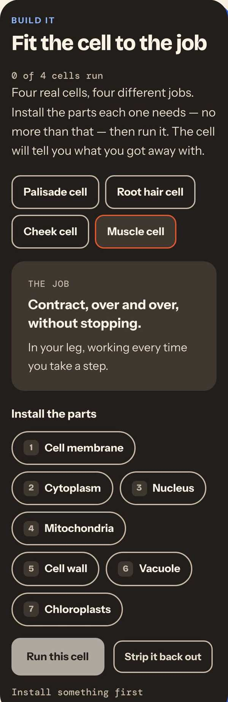
Works and helps. Pupils install parts in four cells and run them to see what each job needs.
A simulation here is a block in a lesson where the pupil changes a control (a slider, a button, a canvas or a bench) and a model responds. Mark each lesson Keep or Remove, then copy your choices.
ks3/biology/cells-and-organisation/animal-and-plant-cells.html

Works and helps. Pupils install parts in four cells and run them to see what each job needs.
ks3/biology/cells-and-organisation/levels-of-organisation.html
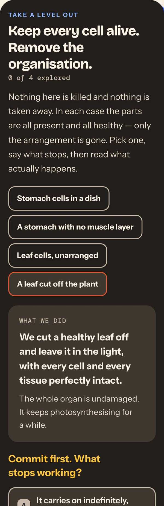
Works, but doesn't add much. Pupils pick a case, guess, then read what happens; it is a reading quiz, not a model.
ks3/biology/cells-and-organisation/specialised-cells.html
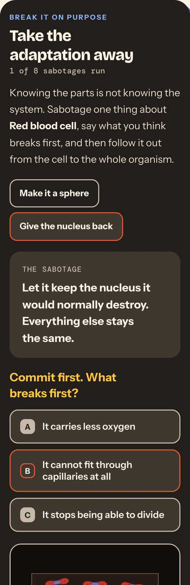
Works and helps. Pupils sabotage a red blood cell, predict what breaks, then see it drawn; makes adaptations stick.
ks3/biology/cells-and-organisation/unicellular-organisms.html
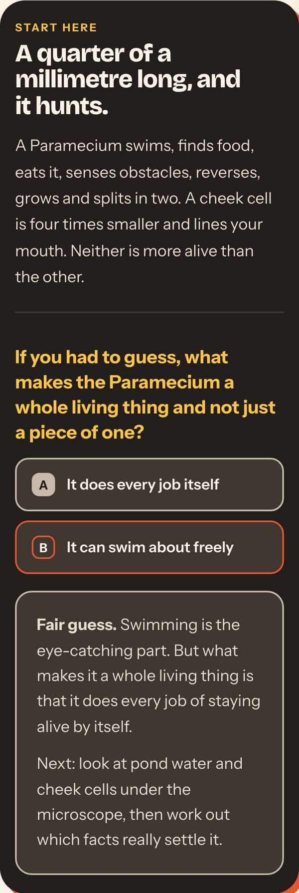
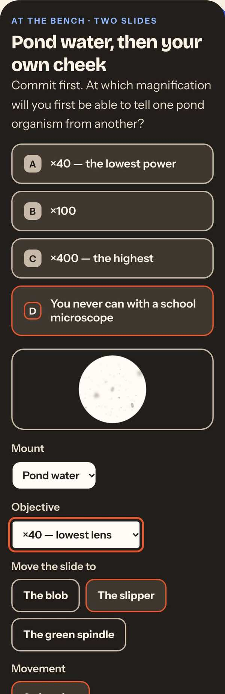
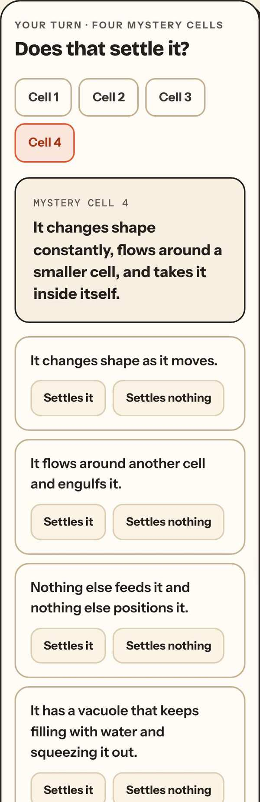
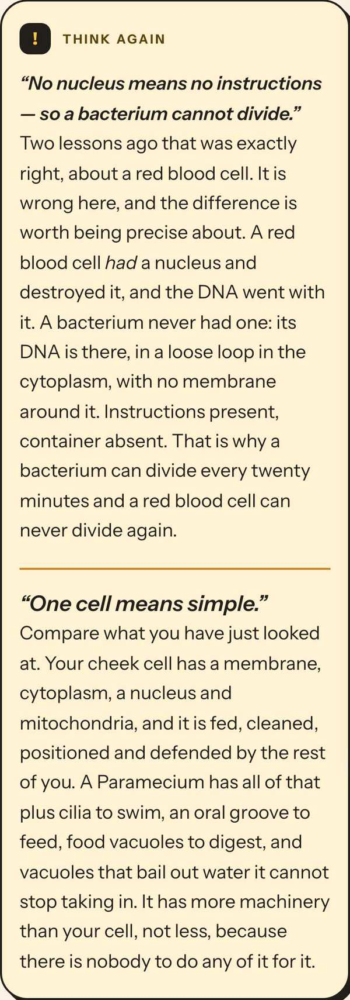
Works and helps. The pond-water microscope lets pupils change lens and find organisms; the mystery-cell quiz below is just tapping text.
ks3/biology/cells-and-organisation/using-a-microscope.html
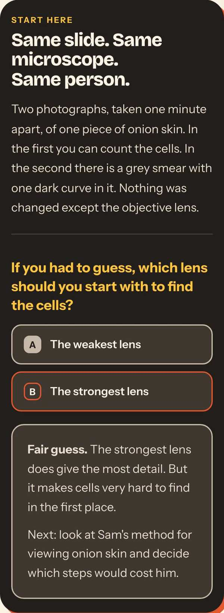
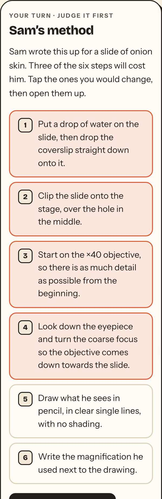
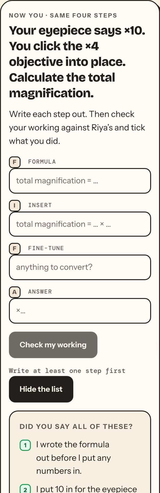
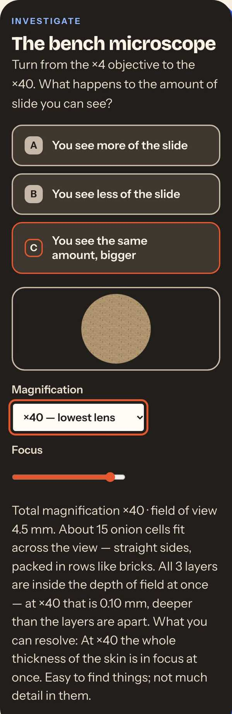
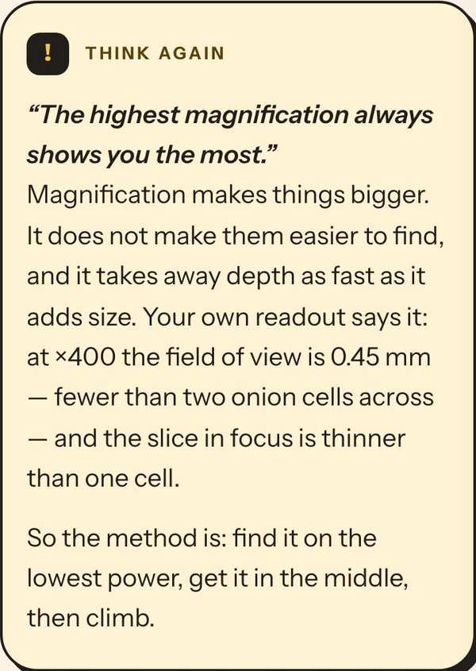
Works and helps. Pupils switch lenses and turn the focus on onion skin; the view is small and the readout wordy.
ks3/biology/ecosystems-and-interdependence/disturbing-a-food-web.html
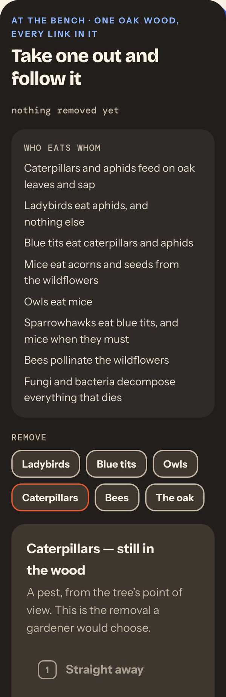
Works, but doesn't add much. Pupils remove an animal and read the knock-on effects; there is no web drawing, so it is mostly reading.
ks3/biology/ecosystems-and-interdependence/food-chains-and-food-webs.html
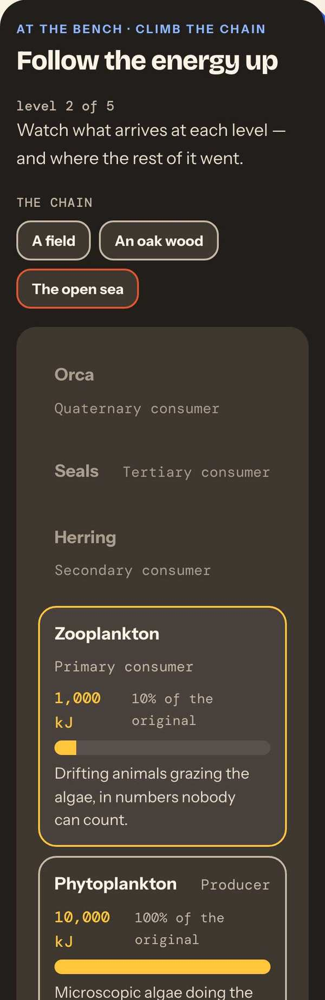
Works and helps. Pupils climb a food chain and watch the energy bar shrink to a tenth each level.
ks3/biology/ecosystems-and-interdependence/pollinators-and-food-security.html
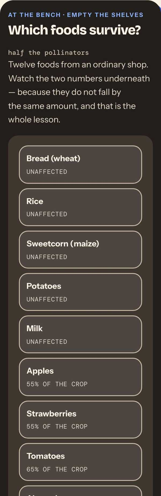
Works and helps. Pupils remove pollinators and see staples survive while fruit crops fall; clear, though long on a phone.
ks3/biology/ecosystems-and-interdependence/predator-and-prey.html
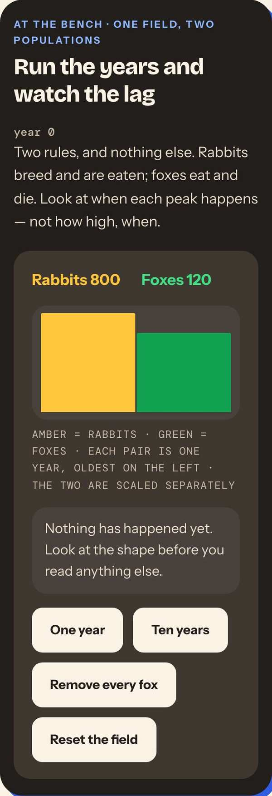
Works and helps. Pupils run the years and watch fox numbers peak after rabbit numbers; shows the lag clearly.
ks3/biology/ecosystems-and-interdependence/sampling-an-ecosystem.html
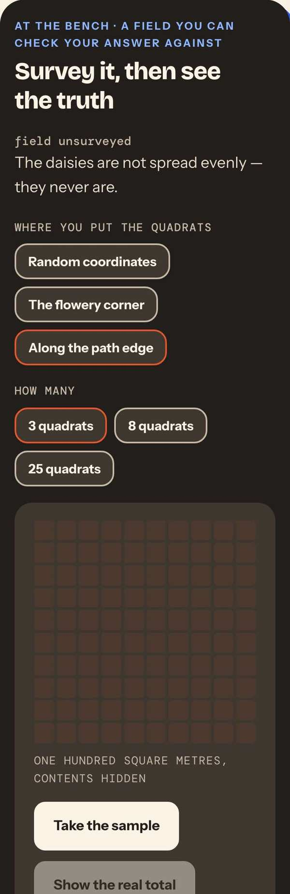
Works and helps. Pupils choose where and how many quadrats, sample, then compare with the real total; good for random sampling.
ks3/biology/ecosystems-and-interdependence/toxic-build-up-in-a-food-chain.html
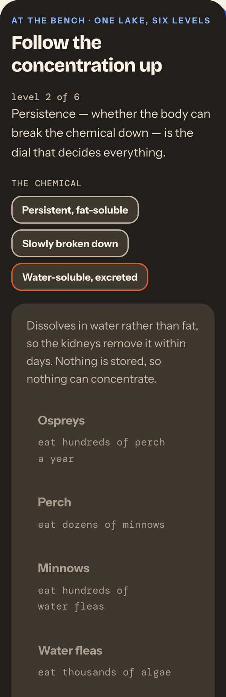
Works and helps. Pupils pick how long a chemical lasts and follow its concentration up the chain to the osprey.
ks3/biology/evolution-extinction-and-biodiversity/biodiversity-and-gene-banks.html
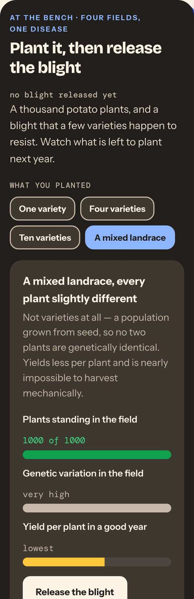
Works and helps. Pupils plant one or many varieties, release blight, and see that variety protects the next harvest.
ks3/biology/evolution-extinction-and-biodiversity/natural-selection.html
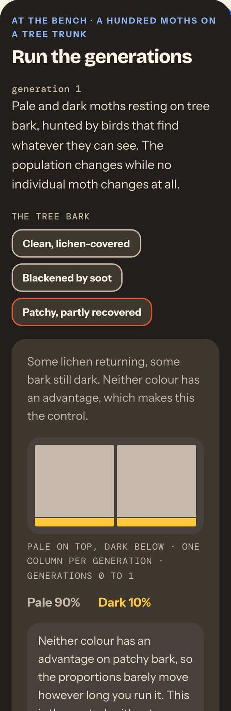
Works and helps. Pupils pick the bark colour and run generations to watch pale and dark moth numbers shift.
ks3/biology/evolution-extinction-and-biodiversity/variation-and-competitive-success.html
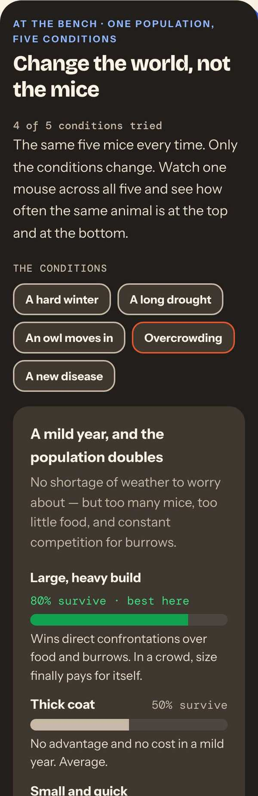
Works and helps. Pupils change the conditions and see survival bars show a different mouse winning each time.
ks3/biology/evolution-extinction-and-biodiversity/when-the-environment-changes-extinction.html
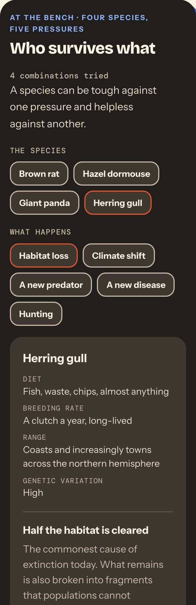
Works, but doesn't add much. Pupils pair a species with a threat and read the outcome; mostly text cards, long on a phone.
ks3/biology/health-and-drugs/alcohol-and-smoking.html
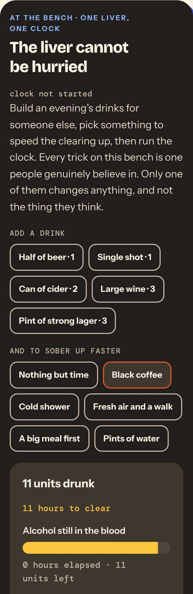
Works and helps. Pupils add drinks and try sobering-up tricks, then see only time clears the units; very clear.
ks3/biology/health-and-drugs/substance-misuse-and-decisions.html
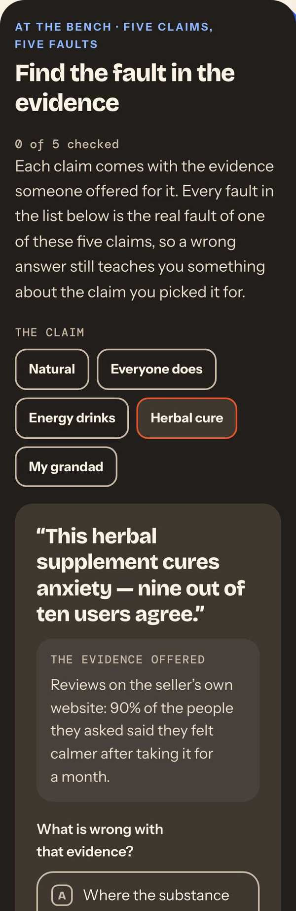
Works, but doesn't add much. Pupils pick a claim and choose its fault from a list; a useful quiz, but not a sim.
ks3/biology/health-and-drugs/what-drugs-do-to-the-body.html
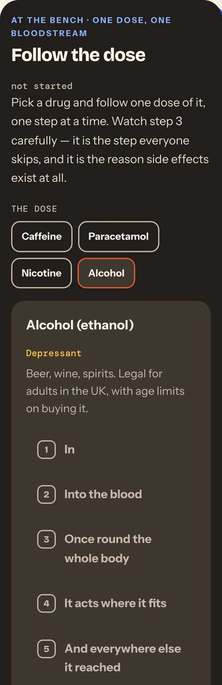
Works, but doesn't add much. Pupils pick a drug and step through five text stages; it is reading, with nothing to see change.
ks3/biology/inheritance-and-dna/chromosomes-genes-and-dna.html
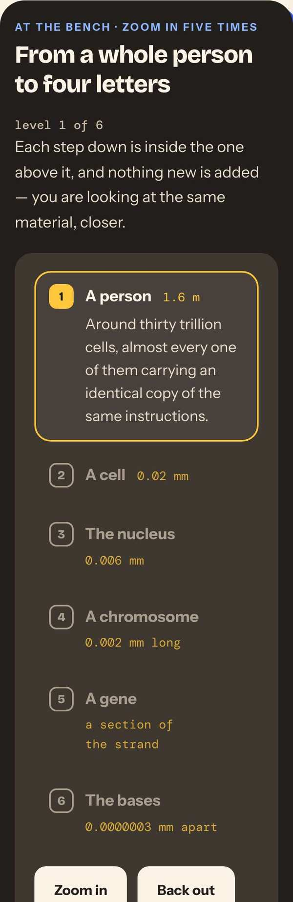
Works, but doesn't add much. Pupils tap zoom to move down a text list from person to bases; no pictures, so little gained.
ks3/biology/inheritance-and-dna/how-we-worked-out-dna.html
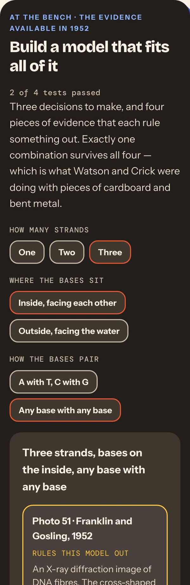
Works, but doesn't add much. Pupils choose strands and base pairing and read evidence cards; sound idea but very long reading on a phone.
ks3/biology/inheritance-and-dna/passing-it-on-heredity.html
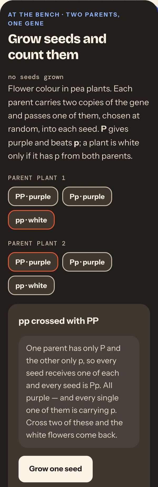
Works and helps. Pupils choose two parents and grow seeds to see the 3:1 ratio appear; the explanation gives it away first.
ks3/biology/inheritance-and-dna/variation-continuous-and-discontinuous.html
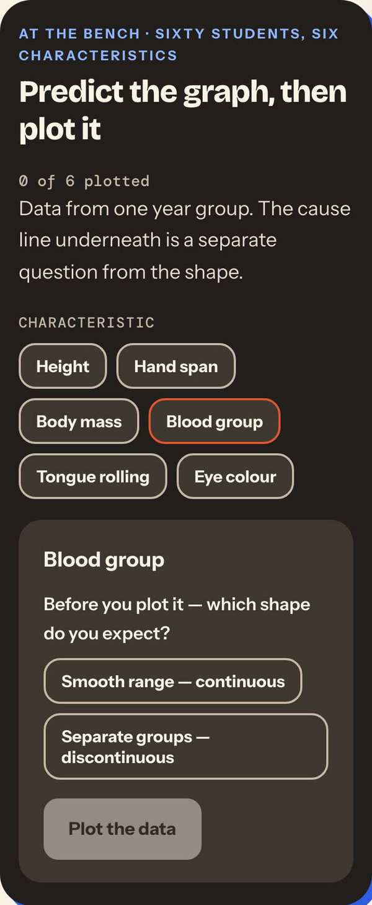
Works and helps. Pupils predict the graph shape for each feature, then plot it; Plot stays locked until they predict.
ks3/biology/inheritance-and-dna/what-makes-a-species.html
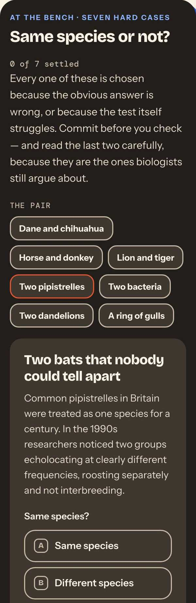
Works, but doesn't add much. Pupils read seven tricky pairs and tap same or different species; a good quiz, but text only.
ks3/biology/movement-skeleton-and-muscles/antagonistic-muscle-pairs.html
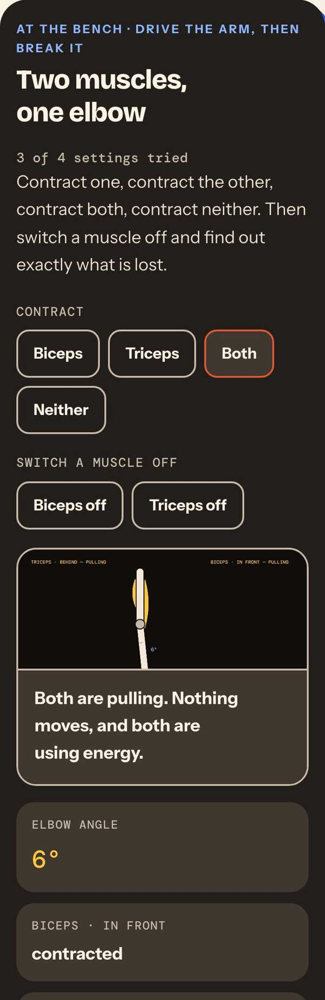
Works and helps. Pupils contract biceps, triceps or both and watch the arm move; the drawing is small but clear.
ks3/biology/movement-skeleton-and-muscles/biomechanics-forces-in-the-body.html
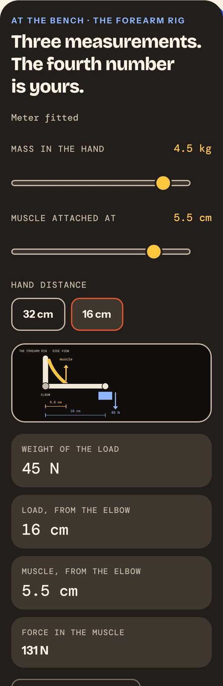
Works and helps. Pupils move the load and the muscle attachment and see the muscle force change on a clear diagram.
ks3/biology/movement-skeleton-and-muscles/joints.html
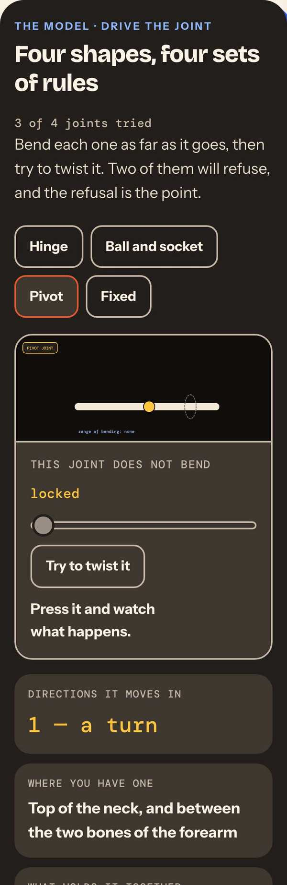
Works and helps. Pupils switch joint types and try to bend or twist each; the drawing is small and plain.
ks3/biology/nutrition-and-digestion/a-balanced-diet.html
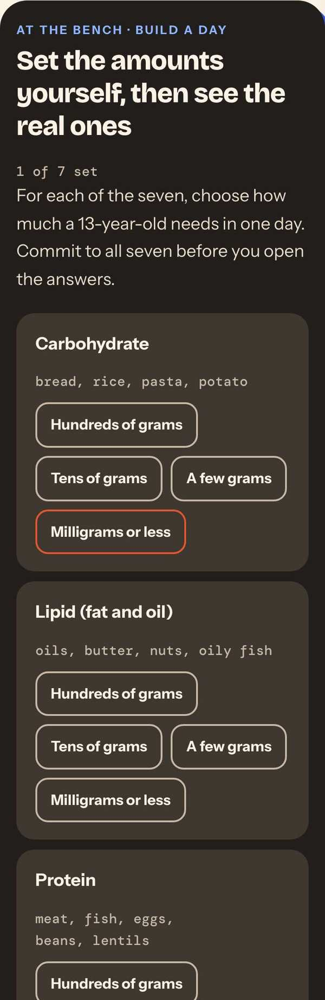
Works, but doesn't add much. Pupils guess grams for seven nutrients from four buttons each; a long tap quiz with nothing to watch.
ks3/biology/nutrition-and-digestion/absorption-and-the-small-intestine.html
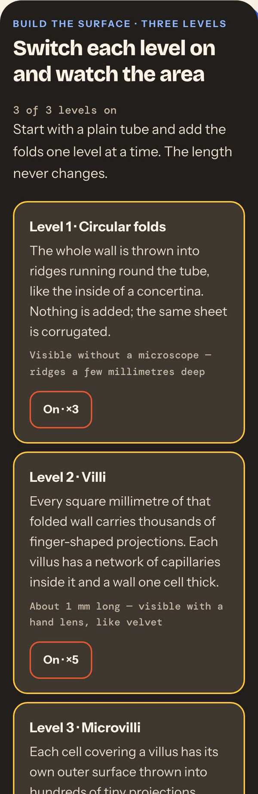
Works, but doesn't add much. Pupils add fold levels and see the area multiply, but it is text cards with no picture.
ks3/biology/nutrition-and-digestion/bacteria-in-the-gut.html
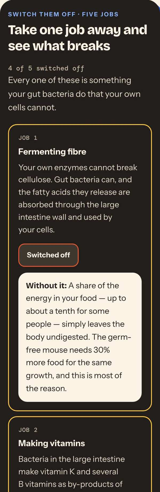
Works, but doesn't add much. Pupils switch off each bacterial job to reveal a paragraph; tap-to-read, nothing to explore.
ks3/biology/nutrition-and-digestion/energy-in-food-and-what-you-need.html
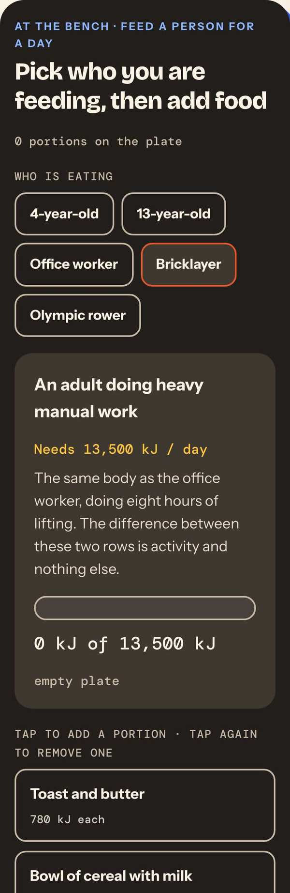
Works and helps. Pupils pick a person and add meals to fill their daily energy bar; makes kJ needs concrete.
ks3/biology/nutrition-and-digestion/enzymes-in-digestion.html
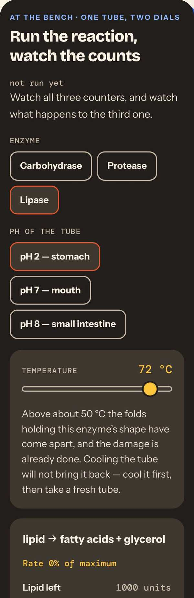
Works and helps. Pupils pick an enzyme, pH and temperature and watch the rate and product counts change.
ks3/biology/nutrition-and-digestion/food-tests.html
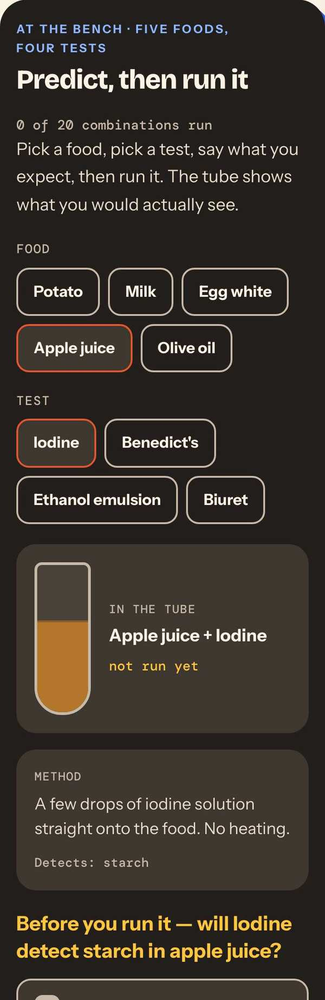
Works and helps. Pupils pick a food and test, predict, then see the tube colour; Run waits for a prediction.
ks3/biology/nutrition-and-digestion/the-digestive-system.html
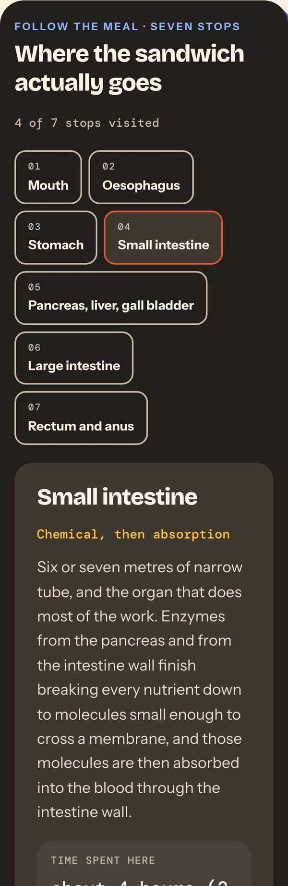
Works, but doesn't add much. Pupils tap seven organ buttons to read a paragraph each; no diagram, so it is just reading.
ks3/biology/nutrition-and-digestion/when-diet-goes-wrong.html
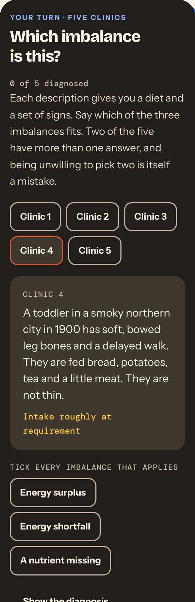
Works, but doesn't add much. Pupils read five patient cases and tick the imbalance; a decent quiz but heavy reading.
ks3/biology/photosynthesis/leaves-built-for-the-job.html
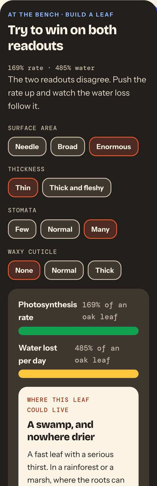
Works and helps. Pupils build a leaf and see photosynthesis and water loss rise together; good for the trade-off.
ks3/biology/photosynthesis/testing-a-leaf-for-starch.html
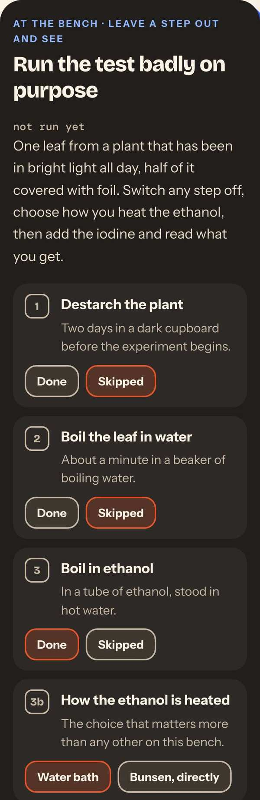
Works and helps. Pupils skip steps on purpose and see how the iodine result goes wrong; shows why each step matters.
ks3/biology/photosynthesis/the-photosynthesis-reaction.html
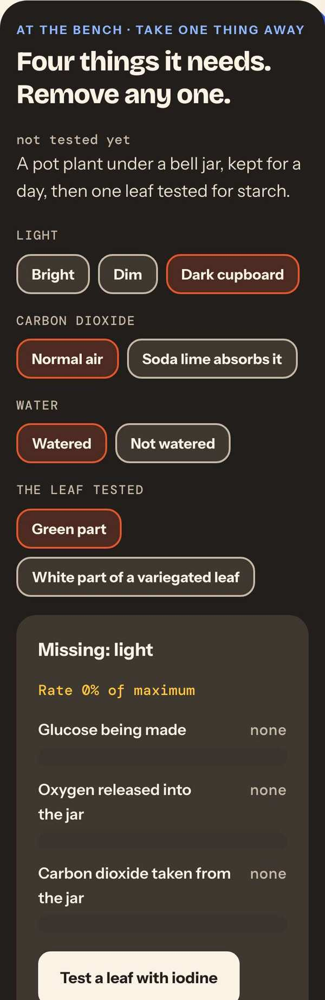
Works and helps. Pupils remove light, carbon dioxide or water and see glucose and oxygen output drop to zero.
ks3/biology/photosynthesis/why-almost-all-life-depends-on-it.html
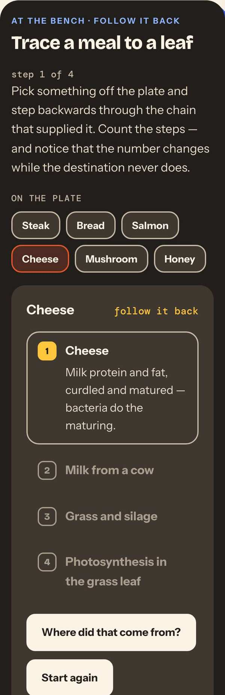
Works, but doesn't add much. Pupils step a food back through a text list to a leaf; the same point every time.
ks3/biology/reproduction/fertilisation-seeds-and-fruit.html
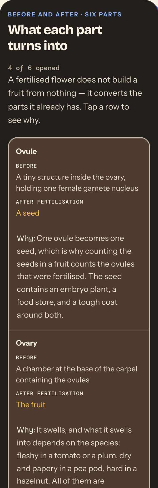
Works, but doesn't add much. Pupils tap rows to read why each flower part changes; the answers already show, so little to do.
ks3/biology/reproduction/flowers-and-pollination.html
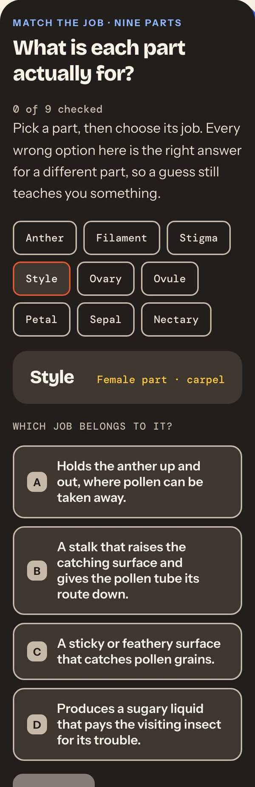
Works, but doesn't add much. Pupils pick a flower part and choose its job from four; a plain quiz with no flower picture.
ks3/biology/reproduction/gametes-and-fertilisation.html
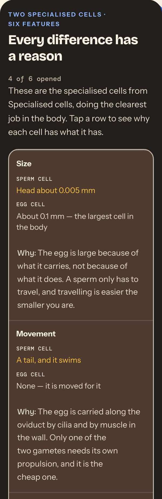
Works, but doesn't add much. Pupils tap rows comparing sperm and egg to read a reason; a table with extra text, not a sim.
ks3/biology/reproduction/gestation-placenta-and-birth.html
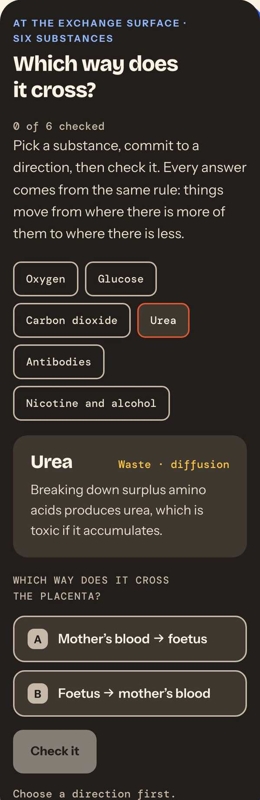
Works, but doesn't add much. Pupils pick a substance and choose which way it crosses the placenta; a short quiz, nothing moves.
ks3/biology/reproduction/human-reproductive-systems.html
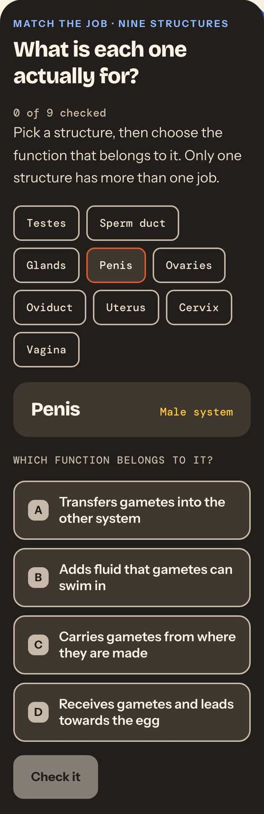
Works, but doesn't add much. Pupils match nine organs to their jobs by tapping options; a quiz with no diagram to anchor it.
ks3/biology/reproduction/lifestyle-and-the-developing-foetus.html
Works, but doesn't add much. Pupils pick a substance and say whether it reaches the foetus; a simple quiz, not a sim.
ks3/biology/reproduction/seed-dispersal.html
Works, but doesn't add much. Pupils read a seed description and pick wind, water or animal; no pictures, so it is reading.
ks3/biology/reproduction/the-menstrual-cycle.html
Works and helps. Pupils pick a cycle length and step through the days, seeing when the egg is released each time.
ks3/biology/respiration/aerobic-respiration.html
Works, but doesn't add much. Pupils pick a food and see mass in equals mass out; the same table of numbers each time.
ks3/biology/respiration/aerobic-vs-anaerobic.html
Works, but doesn't add much. A five-question quiz on which kind of respiration is running; useful practice, but not really a simulation.
ks3/biology/respiration/anaerobic-respiration-in-humans.html
Works and helps. Pupils pick a pace and press Run to watch lactic acid build and breathing stay high after stopping.
ks3/biology/respiration/fermentation.html
Works and helps. Pupils set organism, oxygen, temperature and sugar and see whether they get bread, beer, yoghurt or nothing.
ks3/biology/respiration/why-every-cell-respires.html
Works, but doesn't add much. Pupils tap five cells and read where each one's energy goes; mostly reading, little to do.
ks3/chemistry/atoms-elements-and-compounds/compounds.html
Works and helps. Pupils test iron and sulfur mixed, then heated, with a magnet and scales; shows a compound clearly.
ks3/chemistry/atoms-elements-and-compounds/conservation-of-mass.html
Works and helps. Pupils run reactions in open and sealed flasks on a balance and see where the missing mass went.
ks3/chemistry/atoms-elements-and-compounds/formulae.html
Works and helps. Pupils change atom counts and see most combinations are not real substances; good for why formulae are fixed.
ks3/chemistry/atoms-elements-and-compounds/the-atom-daltons-model.html
Works and helps. Pupils zoom from a centimetre of copper wire down towards one atom; gives a real sense of scale.
ks3/chemistry/particles-and-their-behaviour/changes-of-state.html
Works and helps. Dragging through the heating curve shows temperature stalling while ice melts; the two guess questions add little.
ks3/chemistry/particles-and-their-behaviour/diffusion.html
Works, but doesn't add much. Three fixed text cards with nothing to press; it is reading, not a simulation.
ks3/chemistry/particles-and-their-behaviour/gas-pressure.html
Works, but doesn't add much. Three tap-to-predict questions about wall hits; the actual particle bench is not in this block.
ks3/chemistry/particles-and-their-behaviour/particle-model.html
Works and helps. Pupils guess what is between particles, then squash a gas or pour water in to test it.
ks3/chemistry/particles-and-their-behaviour/solids-liquids-and-gases.html
Works and helps. Pupils switch one substance between solid, liquid and gas and watch the particles; the table below is cut off.
ks3/chemistry/the-earth-and-its-atmosphere/a-planet-with-limits.html
Works and helps. Pupils pick a material and collection rate and watch how much survives each round of recycling.
ks3/physics/describing-motion/distance-time-graphs.html
Works and helps. Pupils choose a speed for each three seconds, then watch the walker draw a line to match the target.
ks3/physics/describing-motion/relative-motion.html
Works and helps. Pupils switch between roadside, car A and car B and see the same cars give different speeds.
ks3/physics/describing-motion/speed.html
Works and helps. Pupils set ramp height and gate gap, release the trolley and work out speed from distance and time.
ks3/physics/electric-circuits/building-and-measuring-a-circuit.html
Works and helps. Pupils put the ammeter and voltmeter in right or wrong places and see the readings go wrong.
ks3/physics/electric-circuits/conductors-and-insulators.html
Works and helps. Pupils clip seven materials into a circuit and compare the current; clear sorting of conductors and insulators.
ks3/physics/electric-circuits/current-and-circuits.html
Works and helps. Pupils add cells, open the switch and move the ammeter to see current is the same all round.
ks3/physics/electric-circuits/current-at-a-junction.html
Works and helps. Pupils change what is in each branch and see the branch currents always add up to the main one.
ks3/physics/electric-circuits/potential-difference.html
Works and helps. Pupils move the voltmeter across each part and see the battery's voltage shared between the components.
ks3/physics/electric-circuits/resistance.html
Works and helps. Pupils pick a component and set the voltage, then divide the two meter readings to get resistance.
ks3/physics/electric-circuits/series-and-parallel.html
Works and helps. Pupils rewire two bulbs and unscrew one to see what happens to brightness and current.
ks3/physics/energy-at-home/calculating-energy-transferred.html
Works and helps. Pupils pick an appliance and running time and see the energy in joules, kilowatt-hours and pence.
ks3/physics/energy-at-home/energy-in-food.html
Works and helps. Pupils burn foods under water and use the temperature rise to compare energy; the opening guess adds little.
ks3/physics/energy-at-home/power-ratings-in-watts.html
Works, but doesn't add much. A tap-to-sort quiz on power versus energy units; good practice but not a simulation.
ks3/physics/energy-at-home/reading-a-fuel-bill.html
Works and helps. Pupils set how long each appliance runs and watch the bill change; the table is cut off on phones.
ks3/physics/energy-transfers/conduction.html
Works, but doesn't add much. Pupils say whether objects at 20 °C feel cold; a useful quiz, but nothing is simulated.
ks3/physics/energy-transfers/energy-transfers-before-and-after.html
Works, but doesn't add much. A tap-to-sort quiz on wasted versus useful energy; fine practice, but not a simulation.
ks3/physics/energy-transfers/heating-and-thermal-equilibrium.html
Works and helps. Pupils run three pairs and see energy flow one way, hot to cold, until the temperatures match.
ks3/physics/energy-transfers/insulation.html
Works and helps. Pupils race a wrapped and a bare ice cube and see wool slows melting rather than adding warmth.
ks3/physics/energy-transfers/radiation.html
Works, but doesn't add much. A tap-to-sort quiz on harmless versus risky radiation; good for misconceptions, but not a simulation.
ks3/physics/energy-transfers/simple-machines.html
Works and helps. Pupils slide the fulcrum and see force go down as distance goes up; the lever picture is very plain.
ks3/physics/forces/air-and-water-resistance.html
Works and helps. Pupils pick a falling object and speed and watch drag grow until it balances the weight.
ks3/physics/forces/balanced-and-unbalanced.html
Works and helps. Pupils change what holds a mass up and see when forces balance and when it falls; some labels overlap.
ks3/physics/forces/drawing-and-adding-forces.html
Works and helps. Pupils set two opposing pulls on a sledge and see the single resultant arrow grow or vanish.
ks3/physics/forces/friction.html
Works and helps. Pupils change surface and load and compare the force to start the block with keeping it sliding.
ks3/physics/forces/moments.html
Works and helps. Pupils pick a spanner length and pull and see when the turning effect is enough to shift the nut.
ks3/physics/forces/non-contact-forces.html
Works, but doesn't add much. Pupils label eight situations as contact or non-contact forces; a sorting quiz with a simple diagram.
ks3/physics/forces/springs-and-hookes-law.html
Works and helps. Pupils add loads, record each stretch and plot the graph to find where the spring stops stretching evenly.
ks3/physics/forces/what-a-force-is.html
Works, but doesn't add much. Pupils pick a case and say what pushes or pulls back; a quiz rather than a simulation.
ks3/physics/forces/what-forces-do-to-motion.html
Works and helps. Pupils apply a force forwards, backwards or sideways and see the trolley speed up, slow down or turn.
ks3/physics/light/colour-and-the-spectrum.html
Works and helps. Pupils send white or single colours through a prism and see which bend most; clear spectrum idea.
ks3/physics/light/lenses-and-images.html
Works and helps. Pupils change distance, box length and hole size and watch picture height and blur trade off.
ks3/physics/light/light-travels.html
Works and helps. Pupils switch air to vacuum and see light still arrives but the bang never does.
ks3/physics/light/reflection-mirrors-and-scattering.html
Works and helps. Pupils swap mirror for paper or foil and see one clean ray become scattered rays.
ks3/physics/light/refraction.html
Works and helps. Pupils change angle and material and watch the ray bend towards the normal in the block.
ks3/physics/light/the-eye-and-the-camera.html
Works and helps. Pupils compare eye and camera at different brightness and see the opening change size.
ks3/physics/light/why-things-look-coloured.html
Works and helps. Pupils shine coloured light on coloured objects and see what bounces back; diagram labels overlap slightly.
ks3/physics/magnetism-and-electromagnetism/electromagnets.html
Works and helps. Pupils change turns, current and core and count paper clips lifted; strong cause and effect.
ks3/physics/magnetism-and-electromagnetism/how-a-motor-works.html
Works and helps. Pupils flip current or magnets and see force arrows reverse; shows why two flips cancel.
ks3/physics/magnetism-and-electromagnetism/magnetic-fields.html
Works and helps. Pupils place a compass on a grid around different magnets and read the field map.
ks3/physics/magnetism-and-electromagnetism/magnets-and-poles.html
Works, but doesn't add much. Pupils pair magnets and bars on a track, but the picture is tiny and mostly static.
ks3/physics/magnetism-and-electromagnetism/the-earth-is-a-magnet.html
Works and helps. Pupils move north and see the compass dip more, and a nearby magnet overrule the Earth.
ks3/physics/matter-and-the-particle-model/brownian-motion.html
Works, but doesn't add much. Only number bars change with temperature; pupils never actually see the specks jiggle.
ks3/physics/matter-and-the-particle-model/density.html
Works, but doesn't add much. Pupils change block size and see mass change but density stay put; a table would do.
ks3/physics/matter-and-the-particle-model/temperature-and-internal-energy.html
Works, but doesn't add much. Bars compare energy of different amounts, but the stretched scale hides how big the gaps are.
ks3/physics/matter-and-the-particle-model/why-ice-floats.html
Works, but doesn't add much. Pupils compare solid and liquid density bars; water's odd result shows, but a table would do.
ks3/physics/pressure/atmospheric-pressure.html
Works and helps. Pupils climb a mountain and watch a sealed crisp bag swell as the air above thins.
ks3/physics/pressure/pressure-force-over-area.html
Works and helps. Pupils stand a block on different faces and see it sink into sand when pressure is too high.
ks3/physics/pressure/pressure-in-liquids.html
Works and helps. Pupils lower a probe and change liquid and see pressure grow with depth.
ks3/physics/pressure/upthrust-floating-and-sinking.html
Works and helps. Pupils pick blocks and hold them under, seeing upthrust and weight arrows balance or not.
ks3/physics/space/gravity-and-weight.html
Works, but doesn't add much. Pupils pick a planet and mass and read weight off bars; really just a table.
ks3/physics/space/gravity-earth-moon-and-sun.html
Works, but doesn't add much. Bars of force in huge powers of ten; hard to read for KS3 and no picture.
ks3/physics/space/how-far-is-a-light-year.html
Works, but doesn't add much. Tapping an object only highlights a row in a fixed table of light travel times.
ks3/physics/space/mass-vs-weight.html
Works, but doesn't add much. Pupils see weight change while mass stays the same across planets; a simple table makes the point.
ks3/physics/space/seasons-and-the-tilt.html
Works, but doesn't add much. Only daylight bars change with date and place; there is no picture of the tilted Earth.
ks3/physics/space/the-sun-stars-and-galaxies.html
Works, but doesn't add much. Tapping highlights rows in a fixed size table on a stretched scale; little to explore.
ks3/physics/static-electricity/charging-by-rubbing.html
Works and helps. Pupils rub pairs of materials and see which gains or loses electrons; same pair gives none.
ks3/physics/static-electricity/electric-fields.html
Works and helps. Pupils move a test point through the field map; the small arrows are hard to see on a phone.
ks3/physics/static-electricity/forces-between-charges.html
Works and helps. Pupils charge two spheres and see attract or repel arrows, including the neutral surprise.
ks3/physics/waves-and-sound/echoes-reflection-and-absorption.html
Works and helps. Pupils move and change the wall and see echo time and how much comes back.
ks3/physics/waves-and-sound/frequency-pitch-and-loudness.html
Works and helps. Pupils turn two dials and see more waves or taller waves on the trace; very clear.
ks3/physics/waves-and-sound/hearing-and-auditory-range.html
Works and helps. Pupils pick an animal and slide a tone to see whether it falls inside their hearing range.
ks3/physics/waves-and-sound/how-sound-is-made.html
Works, but doesn't add much. Pupils swap sources and listeners, but the picture barely changes; mostly labels to read.
ks3/physics/waves-and-sound/sound-is-longitudinal.html
Works and helps. Pupils drive a slinky sideways or along and see the marked coil move with or across the wave.
ks3/physics/waves-and-sound/sound-needs-a-medium.html
Works and helps. Pupils change the material and see sound speed and arrival time change, and vacuum stops it.
ks3/physics/waves-and-sound/transverse-waves-and-superposition.html
Works and helps. Pupils set two waves crest on crest or crest on trough and see them add or cancel.
ks3/physics/waves-and-sound/ultrasound-at-work.html
Works, but doesn't add much. Echo timing idea is good, but the depth slider says 100 mm while the readout says 180 mm.
ks3/physics/waves-and-sound/waves-on-water.html
Works and helps. Pupils change paddle depth and crest spacing and see amplitude and wavelength change separately.
ks4/biology/ecology/global-warming.html
Doesn't work on a phone. The map is cut off on the right, hiding the coast and labels; only the range shift shows.
ks4/biology/organisation/coronary-heart-disease.html
Works and helps. Pupils slide years of build-up and watch the artery narrow and blood flow fall.
ks4/chemistry/bonding/metals-alloys.html
Works and helps. Pupils add bigger atoms, predict, then push the layers and see them jam; clear alloy idea.
ks4/chemistry/bonding/properties-small-molecules.html
Works and helps. Pupils heat molecules and see the forces between them go while each molecule stays whole.
ks4/physics/waves/infrared-black-bodies.html
Works and helps. Pupils raise the temperature and watch the curve grow and its peak move towards visible.
ks4/physics/waves/lenses.html
Works and helps. Pupils call real or virtual, size and way up before Draw the rays unlocks; good exam practice.